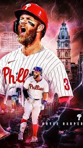

Bryce Harper (born Oct. 16, 1992) is a 33-year-old superstar MLB first baseman/outfielder for the Philadelphia Phillies, renowned for his immense power and early career prodigy status. A 2-time NL MVP (2015, 2021) and 8-time All-Star, he was a 2010 #1 overall draft pick who debuted at 19. He signed a 13-year, $330M deal with Philadelphia in 2019
